Table of Contents
- Intro
- Caching, concurrency and unpredictable costs
- Large contexts from many users can balloon cache
- Bigger batches erode throughput
- Demand creates infinite variance in resource load
- Token costs are fat-tailed; resource costs are fatter-tailed
- Systems crash when batching meets the memory wall
- Vertical integration as cost control, not just a distribution moat
- Variance breaks pricing and pushes vendors toward contracts
- Pricing and capacity planning are an intertwined, moving target
When Anthropic blocked OAuth access from third-party coding agents in early January, critics called it a rent-seeking move. The reaction echoes last year’s Cursor pricing drama, but misses the underlying cause: inference generates fat tailed costs, forcing providers to throttle demand.
This is the same math I wrote about last August. I argued that fixed per-token pricing collapses under unpredictable resource costs and heterogeneous usage. Long-context, agentic workloads, and more users compound tail risk; tail risk here refers not just to profit loss, but overcommitting resources and crashing systems.
The latest dispute between Anthropic and OpenCode reinforces this insight, and also reveals structural forces pushing AI business models towards vertical integration, telemetry and contracted, priority service.
Caching, concurrency and unpredictable costs
What I didn’t include in last August’s essay is that Cursor’s price increase was triggered by Anthropic raising prices for writing to cache — confusing, since conventional wisdom says caching reduces costs.
There are scenarios where the cache bill explodes; unpacking why can feel like a detour, but it’s the quickest way to see why resource costs are even fatter-tailed than token costs.
(Skip ahead to Token costs are fat-tailed; resource costs are fatter-tailed for analysis and pricing implications).
Large contexts from many users can balloon cache
KV cache turns attention from quadratic to linear, which decreases compute but adds per-user memory. That memory is small when weights dominate, yet it scales with prompt length and user count, so under batching it eventually eclipses the weights themselves.
Charts from Tensor Economics' experiments quantify these relationships:
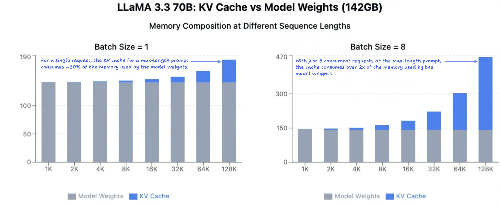
- On the left, with a batch size of one request, you can see memory consumption rising with prompt length; when LLaMA 3.3 reaches its context limit, the KV cache for a single request consumes nearly 30% of the GB taken up by the model weights themselves.
- The right-hand chart shows how this cache pressure scales when batching. KV cache memory is bilinear in sequence length and batch size. While each dimension scales linearly, the product can quickly outgrow the fixed model weights.
In production, this means that once long contexts from many users arrive at the same time, their independent linear ramps multiply into a combined footprint that can outrun memory capacity. As an example, setup of 8 H100s has a memory capacity of around 640 GB: note how a batch of just 8 requests at the full context length of Llama comes close to that limit, at around 73%.
Bigger batches erode throughput
The headline cost driver is sequence length, and token-based pricing seems to cover it: longer prompts cost more, right?
But the true resource costs are not linear, because every extra request in the batch carries its own KV cache, and that memory scales with both sequence length and batch size. Once the product (prompt length × users) outruns capacity, you hit a wall.
Tensor Economics' throughput model shows how fast the wall arrives.The blue curve is the predicted throughput based on the GPUs’ theoretical capacity (assuming 100% utilization). The green curve is the actual observed throughput.
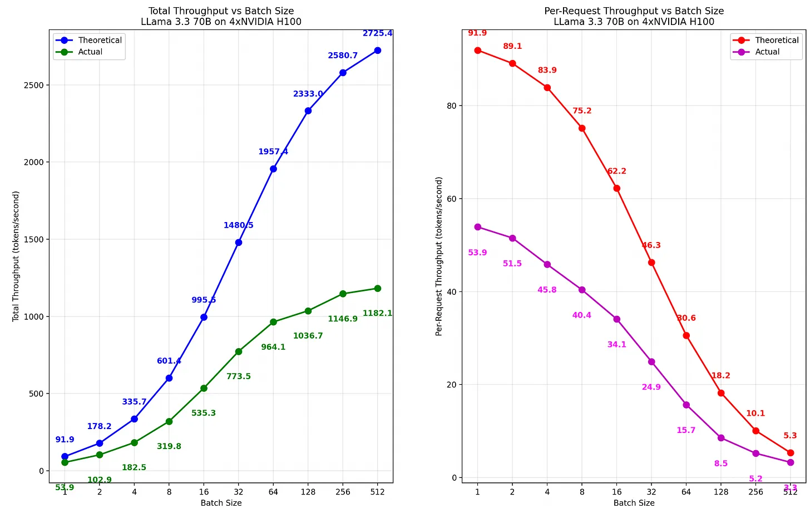
Both curves have a sigmoid shape, but you can see the gap widening as the number of batches increases. There’s two things of note here:
- At a batch size of 1 request, the actual throughput is only ≈60% of the theoretical capacity. This is because in practice, GPUs achieve ≈50-70% of their theoretical capacity due to inefficiencies like interconnect overhead (read more).
- At a batch size of 512 requests, the actual throughput is ≈40% of the theoretical capacity, considerably worse than the starting throughput. As the batch size increases, the actual capacity appears to decrease at a consistent rate relative to the theoretical capacity.
The right-hand curve shows the fractional drop in throughput relative to the GPU’s theoretical maximum; the gap grows roughly exponentially with batch size before leveling off at ≈40%. While this memory capacity decay looks exponential, I would expect it to approach a saturation level rather than decay to zero.
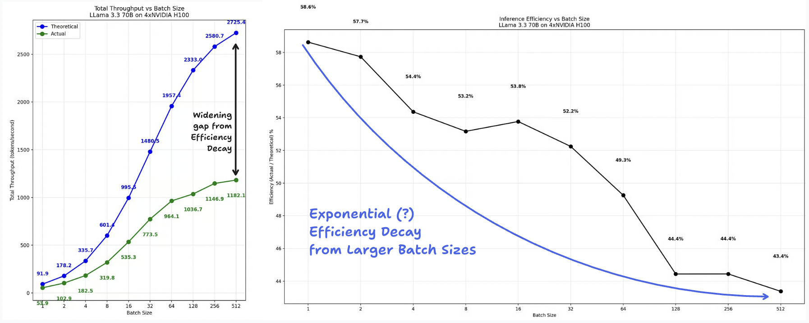
My point is that memory capacity is dependent on batch size, which itself is dependent on non-stationary distributions (GPU efficiency and temporal demand, among other variables). The next section will make this relationship clearer.
Shifting demand creates infinite variance in resource load
What we've discussed thus far is a fairly controlled scenario: 1 large language model, and a fixed input and output length. The only factor that’s varied in Tensor Economics’ model is the number of requests per batch.
None of these cost drivers are independent (real world data rarely is); alone, sequence length and temporal demand imply infinite variance and blow open the aggregate cost distribution, especially when the handoff between prefill and decode is considered.
Prefill and decode phases have different bottlenecks; compute vs. memory-bandwidth-bound, respectively. A naïve scaling strategy over-provisions compute for decode or memory bandwidth for prefill.
The dual bottleneck has made disaggregated serving, which separates prefill from the decode phase and allows for independent optimization, the industry standard. With disaggregated serving, maintaining the balance between prefill and decode instances becomes a key part of scheduling logic.
But counterintuitively, the optimal P/D ratio is not fixed in production-scale environments. Here’s two examples:1. Bytedance
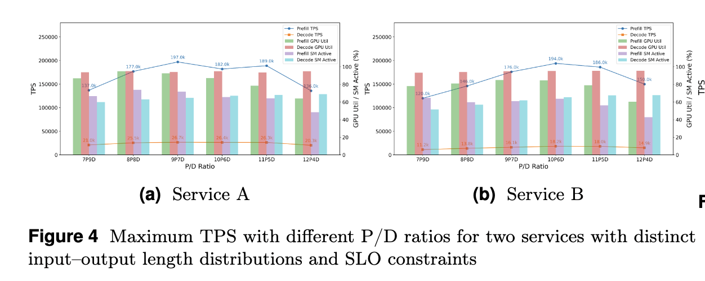
This optimal P/D ratio is not fixed; in our production experience, it spans a considerable range—from 1P/5D to 9P/1D—depending on the input-output length distribution, hardware configurations, and SLO priorities … This variability underscores the need for a flexible scheduling algorithm capable of adapting to diverse P/D ratios.
From Taming the Chaos: Coordinated Autoscaling for Heterogeneous and Disaggregated LLM Inference
2. Huawei
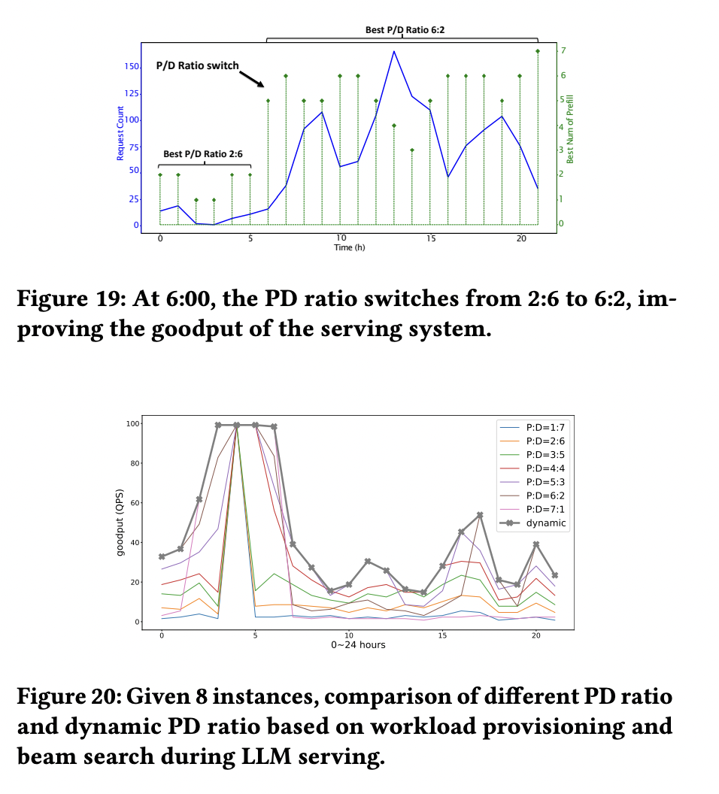
As workloads vary rapidly in real-world serving, a fixed 𝑃𝐷 ratio is not always ideal. Instead, a dynamic 𝑃𝐷 ratio should be used. Figure 20 and Figure 19 show examples of goodput at different PD ratios. Since we lack preliminary workload traces before the real-world deployment of our serving system, we use BurstGPT in our simulation platform to determine the optimal PD ratio under various user, model, and system workloads.
From BurstGPT: A Real-World Workload Dataset to Optimize LLM Serving Systems
The P/D ratio is not fixed because the stages cannot be fully separated. Consider prefill as the "Input," which generates the first KV cache and token, and decode as the "Output," accepting the KV cache and token to continue the autoregressive generation. That relationship is the basis of input and output tokens having different prices to begin with.
The handoff between prefill and decode determines the throughput of a system. The optimal P/D ratio itself drifts with traffic mix, so capacity planning is definitionally a moving target.
Token costs are fat-tailed; resource costs are fatter-tailed
Capacity is already unpredictable in controlled environments, and exacerbated in production due to variance in concurrency of requests, request lengths and response lengths. The clearest way to see why is to separate the tail behaviour of tokens per request and the true resource cost per request.
The mean tokens consumed per request must be finite since it is bounded by the context window limit. But variance is large due to heterogeneous usage, and is amplified as use cases explode and context windows become arbitrarily large with new model releases.
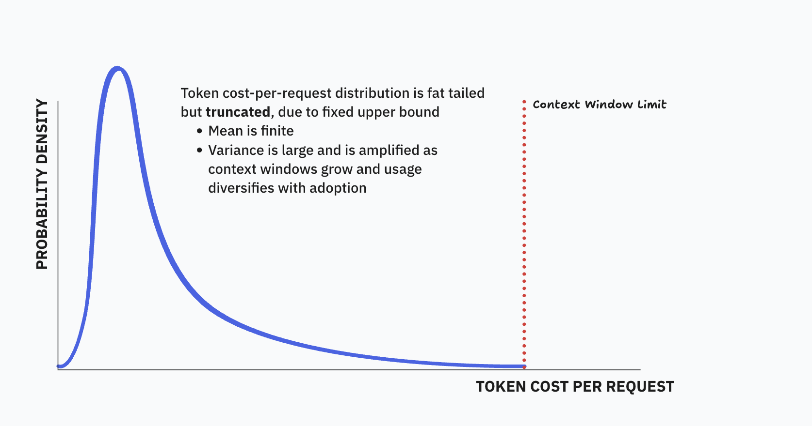
This was the starting intuition that informed my first essay on the instability of per-token pricing, and why AI costs are fat tailed.
So token consumption likely has a finite mean, and near-infinite variance. What does the distribution of the true resource costs per request look like then?
True resource costs are dependent on system state (batch size, temporal demand, P/D ratio, GPU capacity, etc.) which is highly variable, meaning the effective capacity boundary is not fixed in the same way the context window limit is. And because each of these state variables are non-stationary, the conditional mean will never converge.
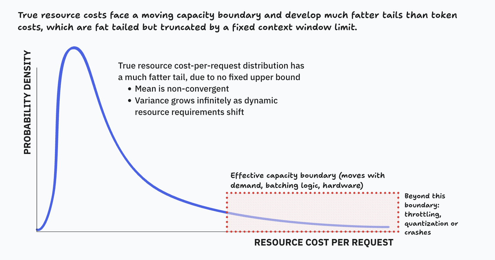
There's plenty of scenarios with a moving conditional mean like this. It’s only a problem because per-token pricing assumes an asymptotic mean cost per request exists, and it’s clearly not the case. You might think it’s not a significant issue due to falling costs, but I’ll address this towards the end.
The takeaway I want you to have is that the marginal cost of a request is statistically impractical to predict. And the deeper implication is that costs aren’t per-request at all. They are a function of the peak system state.
Systems crash when batching meets the memory wall
Once cache outweighs the model weights themselves, variance in usage compounds unpredictability of the effective capacity boundary. This explains why the risk of system outages increases with open-ended, agentic tasks like Claude Code: the longer sequence lengths push inference from the model weights being the primary memory consumer to the KV cache-dominated regime, and the probability of exceeding memory capacity increases.
The Tensor Economics model showed that packing many unrelated user contexts into the same concurrent batch is risky because of KV cache memory pressure and its potential to explode. But Anthropic’s Message Batches API counteracts both of these forces, by splitting a single user’s long request into many sequential requests that are queued and can be executed asynchronously.
So it simultaneously solves the problem of “unrelated contexts” and gives Anthropic temporal control. Which removes the possibility of concurrent long-KV caches exploding in cost.
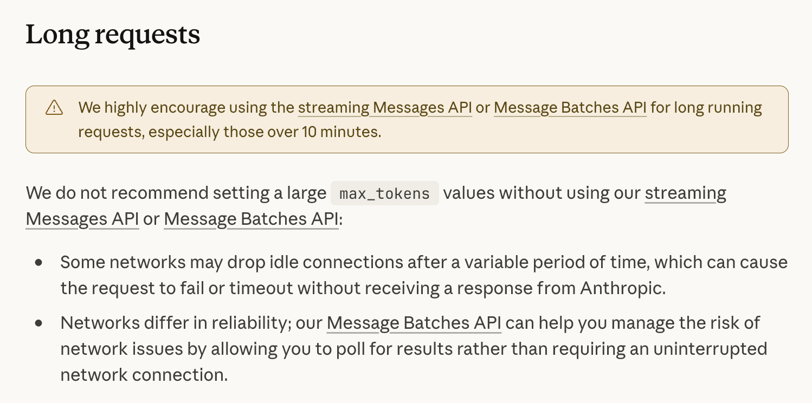
You should now understand why Anthropic encourages batching for long requests, and why cache writes are more expensive than base input tokens.
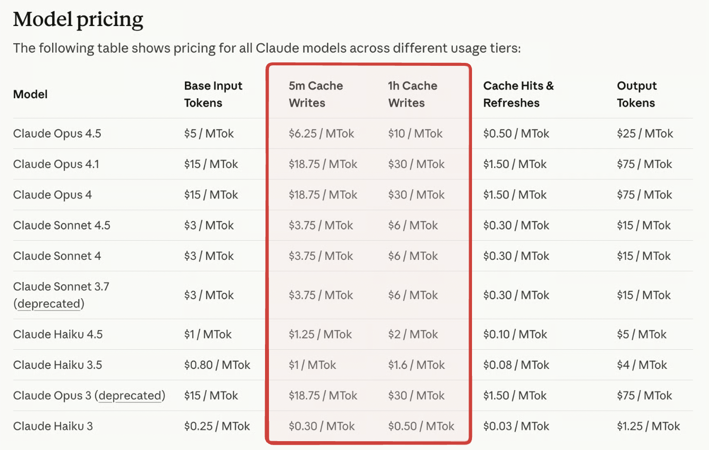
And you also might have picked up on the catch-22: providers need sufficient demand to split model weights across large batches to be profitable. But handling many concurrent users (a large batch size of unrelated contexts) is severely limited by the total memory available.
The same economies of scale that make inference profitable eventually throttle it.
Vertical integration as cost control, not just a distribution moat
Anthropic restricting OpenCode’s OAuth access is primarily a pricing-segmentation fix: it eliminates the worst-case scenario of long-context, high-cost workloads being executed under an uncapped subscription.
But the deeper driver of walling off access is visibility: only the vertically-integrated stack gives the provider a real-time view of input/output ratios, cache pressure, and batch concurrency—exactly the levers needed to control costs.
A Claude Code engineer said himself that 3rd party harnesses generate “unusual traffic patterns without any of the usual telemetry.”
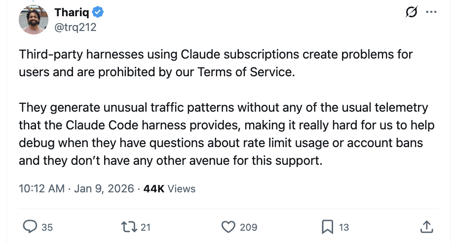
Without that telemetry, subscription pricing is a blind bet on an infinite-variance variable; with it, the provider can at least throttle demand or plan for capacity accordingly. Which is why I believe Anthropic’s restrictions weren't solely to protect a distribution moat, but rather to maintain the feedback loop over unit economics.
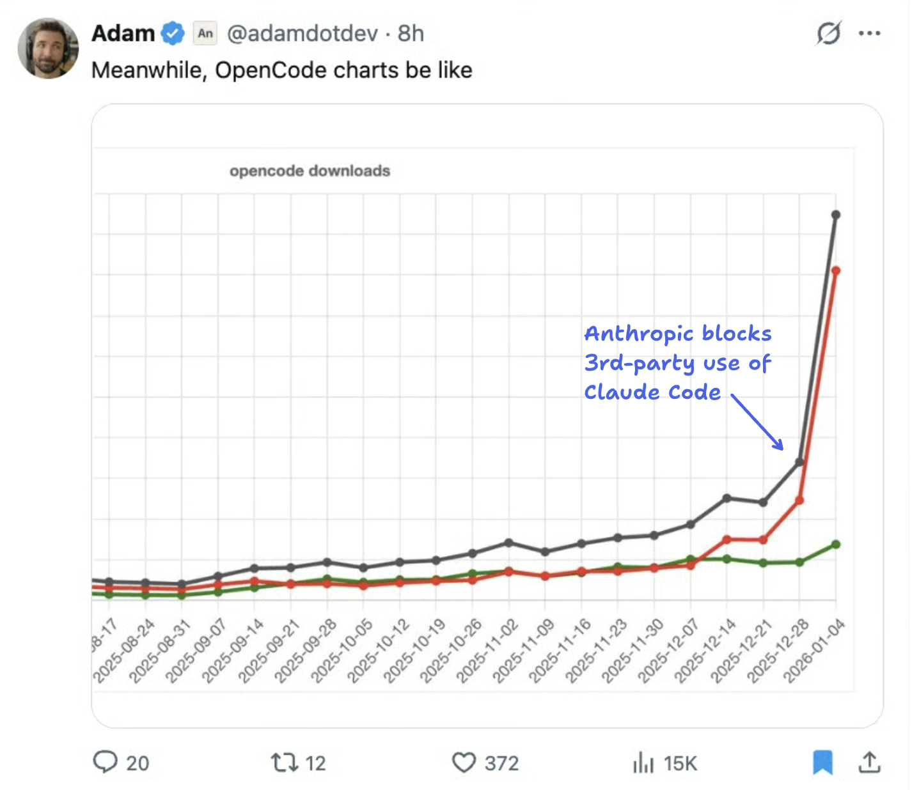
This particular episode may have been a response to a sudden influx of users on OpenCode’s platform, leading to a rare combination of long-context, high-variance, unique workloads.
Seen this way, the structural push toward first-party harnesses is a separate, longer-run dynamic: once usage sits inside Claude Code, Anthropic gains the telemetry required to throttle or re-price in real time, something it still does not have for third-party API traffic—even if that traffic is now billed per-token.
And that may be the real force that pushes labs towards vertical integration; not distribution benefits of locking in customers to walled gardens, nor increased competition, but visibility for cost control.
I find that analysis of AI business models consistently underestimates the impact of unit economics. When people say AI startups face margin squeeze, they point to external competitors or monopolistic GPU pricing as contributing factors. But it seems that the internal resource variance would still exert pressure, even if there was only one LLM provider and chips were abundant.
Margin pressure is fundamentally an internal, structural problem, made worse by external, competitive forces.
Variance breaks pricing and pushes vendors toward contracts
What should be apparent by now is that estimating the resource costs of a request in the real world is extremely challenging, even if you have historical data to go off of. An accurate estimator would require profiles of compute and memory
…for every {model weights size, batch size, sequence length} combination
…while also considering the batch scheduling logic, temporal patterns in demand and heterogeneous usage.
Given how dynamic the resource requirements are, scheduling and provisioning in real time sounds like a nightmare. That plus the need for greater telemetry might explain why Anthropic is experimenting with priority service contracts: upfront revenue, and requires customers to agree to fixed ratios of input to output tokens to make capacity planning more tractable.
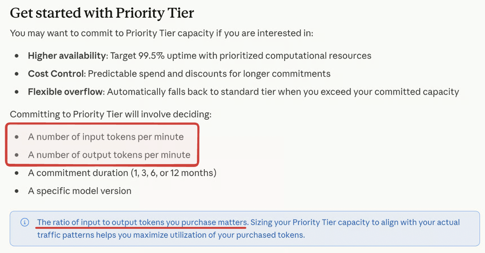
What I think is most interesting about priority service is that it marks a shift from a “per-request cost prediction problem” to an “aggregate capacity problem.” And making that shift requires assuming a design role and allocating specific time-slots instead of rolling the dice.
These contracts could evolve into something like BigQuery’s pricing, that offers sophisticated forecasting for customers’ storage/processing needs and scales resources based on that forecast.
Pricing and capacity planning are an intertwined, moving target
Once you realize how resource variance, heterogeneous usage and temporal demand collide to create a non-stationary, open state space, you also realize predictable budgets on a request-level or fair per-token prices may not matter in the end.
This is the fundamental flaw of per-token and subscription pricing. A scalar price assumes that the resource costs will converge to a mean, when it is evidently non-stationary and shifting.
Falling absolute costs don’t fix the variance problem either. Even if the costs are a fraction of the sticker price on average, the spread around the shifting mean is still fat tailed. A rare combination of concurrent requests and unrelated contexts could wipe out the margin on the other 99% of requests in that time-window.
A business model predicated on static prices will either be wildly unprofitable, or end up like insurance-style schemes.
But the flip side of this is that you don’t need an accurate price that perfectly collapses compute/memory needs and variance into one scalar to improve unit economics. You only need a somewhat measurable signal for how much each request impacts the aggregate capacity state.
With such a signal, you maintain a buffer around the critical resource pool, and your scheduling/pricing logic reacts to buffer consumption. I think there’s many candidates for such a proxy signal. Token entropy, for example, has been used to meaningfully predict sequence lengths, which is the primary cost driver. Or straightforwardly use a compute-time metric, like tokens per second, similar to AWS.
I believe a solution like this will be necessary in the near-term. It seems like right now, requests are prioritized and scheduled according to when they’re submitted. It’s fair, but suboptimal if your concern is increasing profit.
We see nods to contracted priority service as a way to optimize allocation, and counteract this pressure. Maybe this will look like contracts that are re-negotiated with each model release, and customers will estimate their own resource needs. But given how dynamic the resource load is and the sensitivity to temporal demand, that implies a real-time signal is necessary.
In this world, tokens can still be the public metric for explainability but they wouldn’t be treated as the true pricing primitive — they’re an abstraction of the actual meter, that drives both costs and scaling.